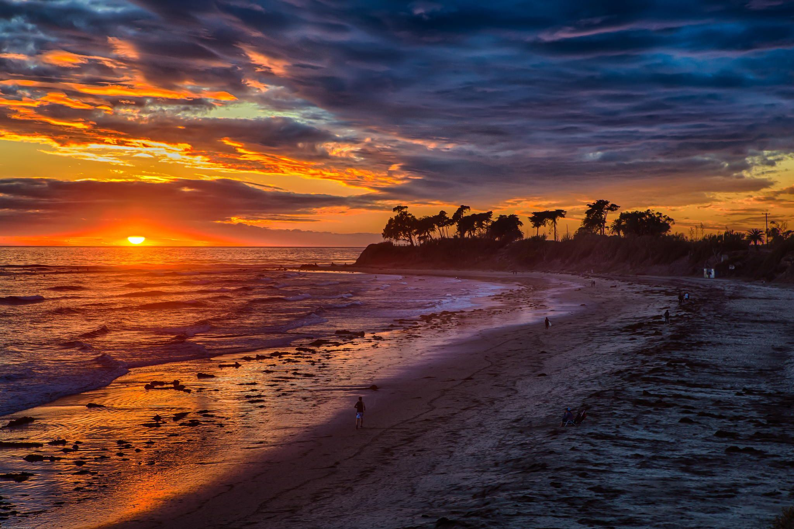

Alejandro Diera
Welcome to my portfolio!
I'm a second-year undergraduate studying computer engineering at the University of California, Santa Barbara. My hometown is Chico, CA but I'm currently residing in Santa Barbara for school. My hobbies include running, weightlifting, soccer, coding, painting, gaming, and traveling. I'm very passionate about technology and enjoy what I do. At UC Santa Barbara, I am apart of several organizations. I am an active member of Sigma Eta Pi, Hermanos Unidos, and Los Ingenieros. With Sigma Eta Pi, I was a part of an 8-week startup where I did several different technical and analytical tasks.
I've been a part of some projects, but I am attemping to partake in more. In the summer of 2019, I was a Cyber Risk Pioneer Intern at Deloitte and I on a team where I did some website development and we presented in front of PPMDs, managers, and other employees.
Click here to get a random fun fact!
My Gallery
Downtown Los Angeles: I had an internship here in the summer of 2019 and really enjoyed my time here.
Bidwell Park: This park in is Chico, CA. This spot was the go-to spot with my friends or family, it has an amazing scenery.

UC Santa Barbara: My school has some of the most amazing sunsets and one of my favorite things to do is going with friends to see them.